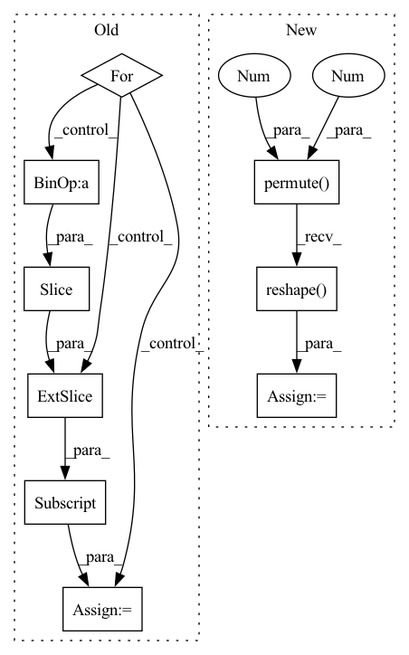

Pattern ID :18734
Before Change
if num > 1:
pieces = []
for i in range(1, num + 1):
start = piece_length * (i - 1)
end = piece_length * i
piece = spec[:, start:end]
if i == num:
piece = spec[:, start:]
After Change
to_be_masked = torch.stack(list(chunks[:-1]), dim=0).unsqueeze(1)
time_mask(to_be_masked)
freq_mask(to_be_masked)
masked = to_be_masked.squeeze(1).permute(1, 0, 2).reshape( (spec.shape[0], -1))
return torch.cat([masked, chunks[-1]], dim=1)
def custom_collate(data):In pattern: SUPERPATTERN
Frequency: 3
Non-data size: 9
Instances Fragment ID: 60931808
Project Name: ivankunyankin/quartznet-asr
Commit Name: 28f999e7cfbefb66c9545f32e76a7454a7432aac
Time: 2021-07-01
Author: IKunyankin@gmail.com
File Name: utils.py
M Class Name: AnonimousClass
N Class Name: AnonimousClass
M Method Name: augment(4)
N Method Name: augment(4)
M Parent Class:
N Parent Class:
M File Name: utils.py
N File Name: utils.py
M Start Line: 57
M End Line: 82
N Start Line: 57
N End Line: 74
Before Change
H = roll_logits.shape[-1] // horizon
sum_loss = 0.0
num_pred = 0
for logits, idx in zip(roll_logits, roll_idx):
roll_targets = targets[..., idx : idx + H]
ce = F.cross_entropy(logits, roll_targets, reduction="sum")
sum_loss = sum_loss + ce
num_pred = num_pred + roll_targets.numel()
return sum_loss / num_predAfter Change
// targets: (B,T)
R, B, Q, H = roll_logits.shape
logits = roll_logits.reshape(R * B, Q, H) // (R*B,Q,H)
targets = targets.unfold(-1, H, 1).permute( 1, 0 , 2 ) // (W,B,H)
targets = targets[roll_idx].reshape( R * B, H) // (R*B,H)
return torch.sum(logits.argmax(1) == targets) / targets.numel()
Fragment ID: 60931826
Project Name: cheind/autoregressive
Commit Name: bd8f0e0dfd5d3fa7abf07c9b48bc4b58604e79f9
Time: 2021-11-16
Author: cheind@profactor.at
File Name: autoregressive/metrics.py
M Class Name: AnonimousClass
N Class Name: AnonimousClass
M Method Name: rolling_origin_accuracy(3)
N Method Name: rolling_origin_accuracy(3)
M Parent Class:
N Parent Class:
M File Name: autoregressive/metrics.py
N File Name: autoregressive/metrics.py
M Start Line: 84
M End Line: 92
N Start Line: 89
N End Line: 93
Before Change
H = roll_logits.shape[-1] // horizon
sum_loss = 0.0
num_pred = 0
for logits, idx in zip(roll_logits, roll_idx):
roll_targets = targets[..., idx : idx + H]
ce = F.cross_entropy(logits, roll_targets, reduction="sum")
sum_loss = sum_loss + ce
num_pred = num_pred + roll_targets.numel()
return sum_loss / num_predAfter Change
// targets: (B,T)
R, B, Q, H = roll_logits.shape
roll_logits = roll_logits.reshape(R * B, Q, H) // (R*B,Q,H)
targets = targets.unfold(-1, H, 1).permute( 1, 0 , 2 ) // (W,B,H)
targets = targets[roll_idx].reshape( R * B, H) // (R*B,H)
return F.cross_entropy(roll_logits, targets, reduction=reduction)
Fragment ID: 60931758
Project Name: cheind/autoregressive
Commit Name: bd8f0e0dfd5d3fa7abf07c9b48bc4b58604e79f9
Time: 2021-11-16
Author: cheind@profactor.at
File Name: autoregressive/metrics.py
M Class Name: AnonimousClass
N Class Name: AnonimousClass
M Method Name: cross_entropy_ro(4)
N Method Name: cross_entropy_ro(3)
M Parent Class:
N Parent Class:
M File Name: autoregressive/metrics.py
N File Name: autoregressive/metrics.py
M Start Line: 70
M End Line: 78
N Start Line: 70
N End Line: 80